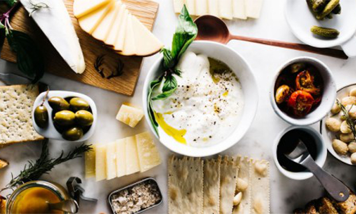

Intereses. Cosas que me gusta hacer
Ciencia
No es sólo un trabajo, también una afición. Me interesan todo tipo de de temas relacionados con ciencia y tecnología. Creo que el pensamiento crítico científico realmente es muy útil en la vida cotidiana.
Música
Soy una de esas personas con banda sonora en su vida, siempre estoy escuchando música. Me encanta encontrarme con canciones que desconocía de (casi) cualquier género musical. También he dado mis primeros pasos aprendiendo a tocar la guitarra.

Gastronomía
En mi familia siempre hemos disfrutado de la buena comida y mis dos abuelas han sido grandes cocineras. Así es como se forjó mi afición por la cocina. Además también llevo adelante un blog de cocina con recetas de toda la familia desde 2008.
Programación web
Solía pensar que el desarrollo web no tenía nada que ver con el cálculo numérico en términos de programación, pero al fin y al cabo los lenguages se parecen más que se diferencian. He sido capaz de aprovechar mi intuición en programación analítica para aplicarlo en diseño web.

Deportes
Intento mantener una vida diaria activa. Entre los deportes que más me gusta practicar están la natación, el submarinismo, el snowboarding, el body combat y el yoga.

Viajes
Cualquier sitio que aún no haya visitado es un buen destino para un viaje, desde un pueblo cercano hasta un paraje natural remoto. Disfruto conociendo nuevos sitios.

Fotografía
Siempre me ha atraído el poder artístico de la fotografía. Disfruto mucho de una buena exposición independientemente del tema del que trate. También me gusta pasearme con mi cámara, aunque soy sólo una novata.
Libros
Es una manera de viajar, de conocer otros estilos de vida, fantásticos paisajes, de fortalecer tus ideas o cambiar tu opinión sobre ellas. Leer te hace libre.